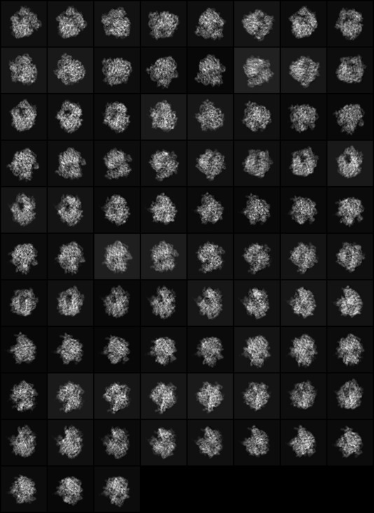

| .OPERATION: | AP I | ; Alignment determination |
| .TEMPLATE FOR REFERENCE IMAGES: | sav_nat_proj_83@** | ; Ref image name template (input) |
| .FILE NUMBERS OR SELECTION DOC. FILE NAME: | 1-83 | ; List of reference images |
| .FIRST, LAST RING, RING SKIP & RAY SKIP: | 5,58,1,1 | ; First, last ring, ring skip |
| .REFERENCE-RINGS FILE: | api_rings | ; Reference ring file (output) |
| .WEIGHT THE RINGS? (Y/N): | Y | ; Check mirrors |
| REFERENCE IMAGES (Half size) | EXPERIMENTAL IMAGES (Half size) | |
|---|---|---|
|  | ||
| sav_nat_proj_83_mon | sav_nat_part_stk_mon |
| REFERENCE-RINGS FILE (Meaningless if visualized) |
|---|